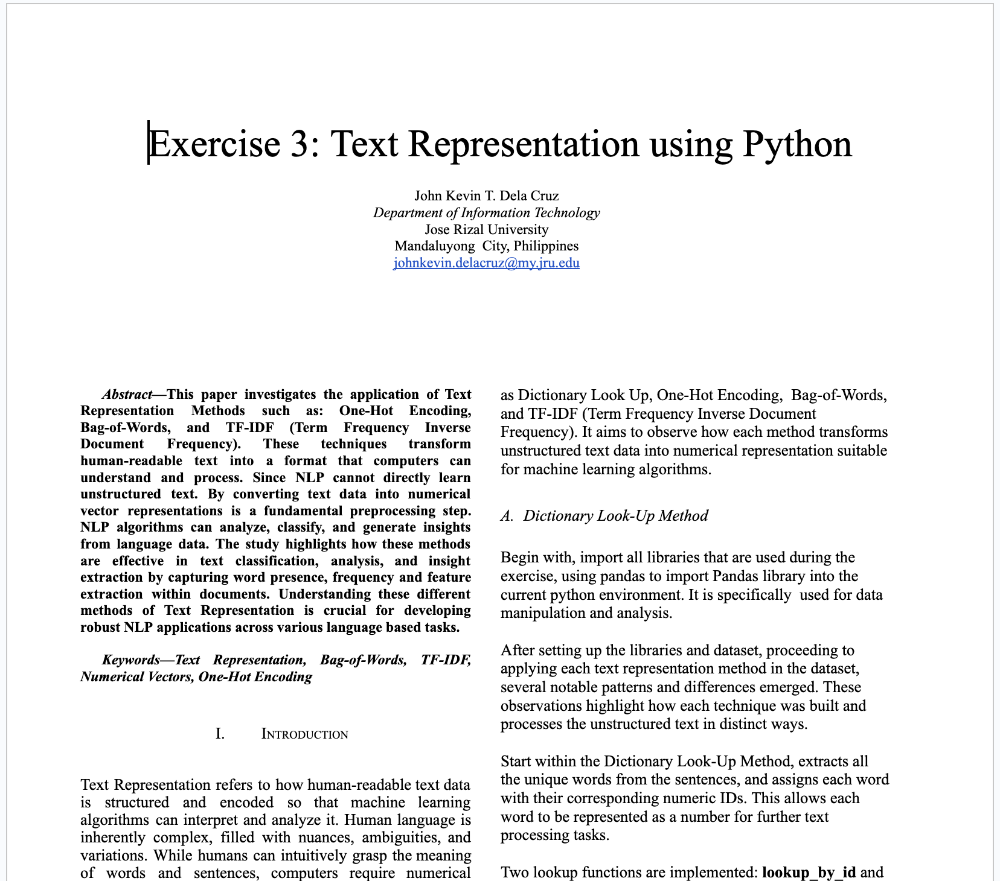
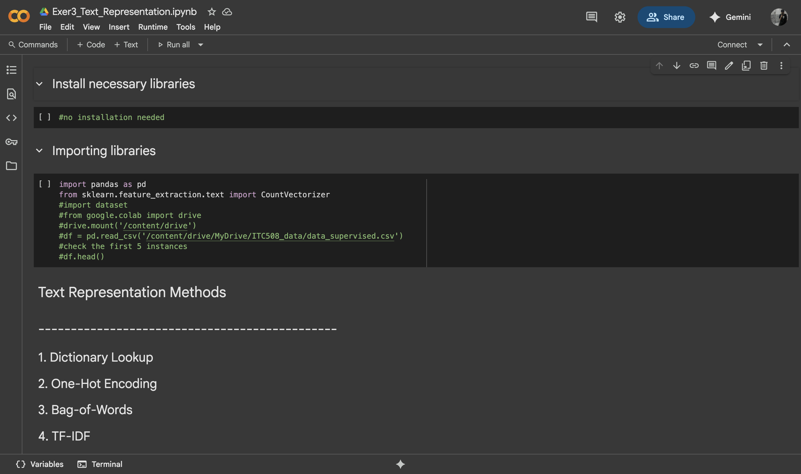

Exercise Midterm #3: Building BERT-Based QnA System (Week 10)
- In this exercise, this is my hands-on experience of Bidirectional Encoder Representations from Transformers (BERT). I learned how to extract precise answers from the provided article by using pre-trained model. Starting with, Environment setup to ensure the the reproducibility and functionality of the experiment, the initial step involved the installation of essential Python libraries required for Natural Language Processing. This make me realize that I need a suitable environment before the application of BERT.
- I also learned how to select suitable transformer-based models for extractive Question and Answering, including BERT-base-cased, DistilBERT-base-cased, and Electra-base-SQuAD2. Through experimentation, I observed that BERT-base-cased performed the best, accurately capturing answers based on the context of the questions. DistilBERT provided faster inference times but often produced less accurate answers, while Electra was less precise compared to BERT-base-cased.
- The most important aspect I learned from this exercise was evaluating each BERT model using different metrics, including F1-Score, Exact Match, and Average Inference Time, to compare their performance and suitability for the Question and Answering task.
- This exercise, made me realized how crucial quantitative evaluation is for validating machine learning models. This skill will help me as a future data analyst and data engineer, where assessing analyzing the data and assessing model performance is crucial, ensuring reliability, and interpreting results accurately are key responsibilities when building data-driven solutions